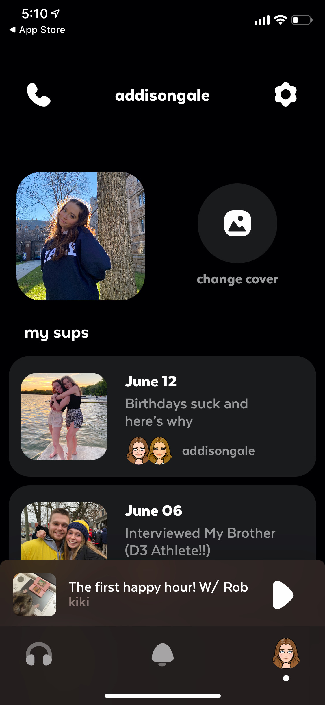
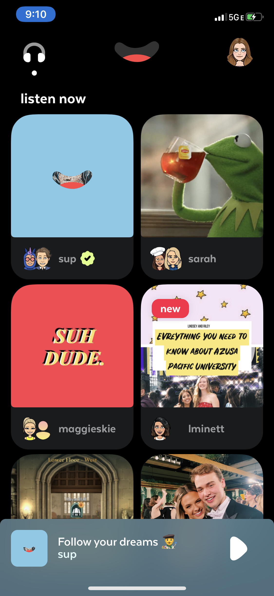

sup by episode 8. Startup Work
App User Interface
Summer 2020 I worked as an intern at a start-up tech company, episode 8, Inc., with the marketing team that was creating a new podcast app. As a member of the team, I presented research findings and recommended solutions to proposed challenges. With my team, I also had the opportunity to give feedback and help design some of the interfaces of the app. Based on consulting with my team, we ideated solutions for different problems the user was having with the app. This is one of the interfaces in specific that I helped design.
Question of the Day
When recording your mini podcast with your friend if you needed an icebreaker or a topic of discussion, we provided questions of the day to possibly discuss in your new podcast.

MySpace Best Friend Inspiration
We took inspiration from MySpace and used a similar “Top 8” friends feature in listening to others' podcasts. You can switch out who your top podcasters are to refresh your feed.
